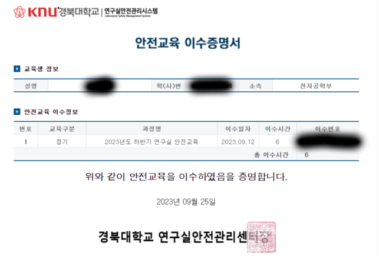
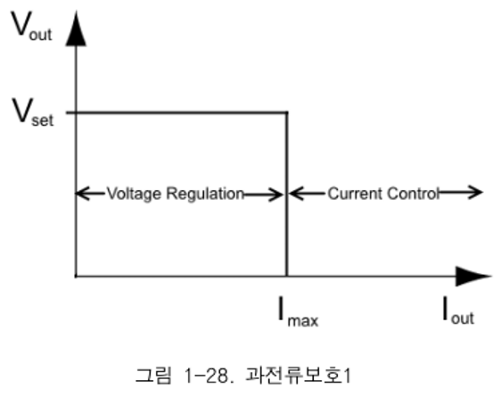
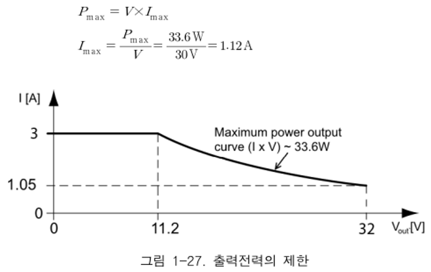

TR-CS203-전공실 강의¶
전공실1 2026년 1학기 강의 소개¶
강의 소개¶
강의 계획서¶
기본 정보¶
개설연도: 2026
개설학기: 1학기
강좌번호: ELEC0251-003
교과목명: 전자공학실험1
학점: 3-2-2
개설대학: IT대학 전자공학부 A
교과목구분: 전공필수
강의언어: 한국어
담당교수: 박성호
- 강의시간: 목 1A,1B, 2A,2B, 3A,3B, 4A,4B
실제 시간: 목 09:00 ~ 13:00
강의실: IT대학2호관(공대5호관) 222호
상담장소/시간: 글로벌프라자 1309호 / 이메일로 시간 예약
- 학과(부) 인재상
- 큰 지식과 큰 마음으로 큰 세상을 여는 큰 인재
(큰 지식)실무전공능력, 설계․융합능력을 갖춘 창의융합인재
(큰 마음)통합적 사고 능력, 공동체 의식을 갖춘 바른품성인재
(큰 세상)도전정신, 국제적 소통능력을 갖춘 글로벌인재
- 학과(부) 교육목표
- 차세대 전자산업을 견인할 전공능력과 품성을 갖춘 Glocal 리더 양성
변화를 주도하는 전공능력과 품성을 갖춘 기본이 강한 인재 양성
지역과 국가의 차세대 전자산업을 견인할 Glocal 리더 양성
강의 개요¶
회로이론과 논리회로의 원리를 실험을 통하여 이해한다.
오실로스코프, 파형발생기, 전원공급기 등 실험 기자재의 사용법을 익힌다.
전자회로의 기본 소자인 저항, 커패시터의 특성을 이해한다.
실험을 계획하고 수행할 수 있는 능력을 키운다.
조원 간의 팀웍을 증진시킨다.
권장선수교과목¶
기초전자실험 및 설계
권장후수교과목¶
전자공학실험2
전자회로1
신호및시스템
교재 및 참고문헌¶
교재: 최봉열, “전자공학실험1”, 제4판, 경북대학교출판부, 2026.
수강 참고사항¶
- 유튜브에 있는 강의자료를 수업시간전에 공부
- 수업전의 질문사항은 다음 단톡방을 활용한다.
ubinos-edu slack workspace 의 경북대-전공실1-강의 채널
출결은 LMS로 실행
조편성 실시: 주도적이고 적극적인 실험 수업 참여를 위해 조편성 실시 함
- 예비보고서:
실험 내용을 숙지하기 위해 예비보고서를 A4 용지 에 자필로 작성하여 실험 시작 전에 조별이 아닌 개인별로 제출 함
실험 내용 이해를 위한 이론, 실험내용을 숙지하기 위한 실험 내용이 반드시 포함되어야 함
- 결과보고서:
실험에 최선을 다하여 성실히 임하고, 별도 공지 시점까지 결과보고서를 작성하여 개인별이 아닌 조별로 제출 함
결과보고서에는 실험 시간에 발생한 문제 등을 다시 한번 살펴볼 수 있도록 고찰을 반드시 작성함
- 실습시험:
실습시험은 기말고사 기간 1주 전에 실시 할 예정
조별 실험이 아닌 개인별 실험을 통해 성적 결정 함
실습시험을 잘 치르기 위해 수업시간에 적극적으로 실험에 임하여야 함
- 재이수자 성적처리
재이수자는 성적의 90%만 인정 (출석, 실습시험, 보고서 점수는 100%인정)
과제 제출 방법¶
- 연구실 안전교육 수강 및 이수증명서 제출 방법
- 다음 웹페이지에서 온라인으로 수강
선택 과목은 임의로 선택해 총 3시간을 채우면 됨 (예: 전기 안전관리 기초, 휴먼에러 등)
이수증 제출 방법: LMS의 “과제 및 평가” 게시판의 “연구실 안전교육” 과제에 이수증명서(그림 Figure 6 참고)을 올림
마감일: 강의 시작 1개월 이내 (3월 31일까지)
{kind=link}

Figure 6 연구실 안전교육 이수증 예¶
- 결과보고서 작성 및 제출 방법
제출 장소: LMS > “과제 및 평가” > “과제”
제출 파일 형식: pdf 파일 (작성한 원본과 pdf 출력본이 다를 수 있으니 pdf 출력본을 확인 후 제출)
- 제출 파일 이름: 전공실1_제<0으로 채워진 두 자리 장 번호>장_결과보고서_<이름>_<학번>.pdf
예: 전공실1_제01장_결과보고서_홍길동_2025123456.pdf
제출 마감: LMS > “과제 및 평가” > “과제” 의 각 과제 페이지에서 확인
강의목표¶
전자회로의 기본 소자인 저항, 커패시터의 특성을 이해하고 실험 기자재의 사용법을 익힌다.
평가방법¶
중간시험 25% 서술형 문항 출제 또는 실기시험
기말시험 25% 서술형 문항 출제 또는 실기시험
- 출석 및 보고서 20%
실험 전 예비보고서 및 실험 후 결과보고서 작성
LMS 출석 시스템을 이용한 출석 체크
- 실습시험 25%
기말 시험 전 주 개별 실습시험 실시
연구실 안전교육 수강 5%
장애학생 학습지원사항¶
청각장애 학생 : 앞자리 지정석, 강의자료 File 제공(가능한 과목에 한함), 긴급 전달사항은 메모활용 등
지체장애 학생 : 시험시간연장 등
뇌병변장애 학생 : 시험시간연장, 강의자료 File 제공(가능한 과목에 한함) 등
시각장애 학생 : 시험지 확대복사제공 등
기타 장애정도에 따라 필요한 사안이 발생시 최대한 편의 제공
주별강의¶
1주차¶
- 수업 목표 및 학습내용
수업 소개, 조 편성
실험1. 실험장비 및 도구
연구실안전관리센터 안전교육 이수안내
실험 시 주의사항 안내등
- 수업 방법 및 매체
강의계획서와 교재목차를 중심으로 강의를 개관하고, 이론 수업인 전자회로 과목과의 연관성을 설명함
- 과제 및 연구문제
실험1 예비보고서
2주차¶
- 수업 목표 및 학습내용
실험2. 전원공급기와 DMM
- 수업 방법 및 매체
실험 수행을 위한 이론 및 실험 방법을 설명하고, 학생들은 조별로 실험
- 과제 및 연구문제
실험1 결과보고서
실험2 예비보고서
3주차¶
- 수업 목표 및 학습내용
실험3. 오실로스코프 친해지기
- 수업 방법 및 매체
실험 수행을 위한 이론 및 실험 방법을 설명하고, 학생들은 조별로 실험
- 과제 및 연구문제
실험2 결과보고서
실험3 예비보고서
4주차¶
- 수업 목표 및 학습내용
실험4. 오실로스코프 동작원리 및 함수발생기
- 수업 방법 및 매체
실험 수행을 위한 이론 및 실험 방법을 설명하고, 학생들은 조별로 실험
- 과제 및 연구문제
실험3 결과보고서
실험4 예비보고서
5주차¶
- 수업 목표 및 학습내용
실험5. 저항과 저항회로
- 수업 방법 및 매체
실험 수행을 위한 이론 및 실험 방법을 설명하고, 학생들은 조별로 실험
- 과제 및 연구문제
실험4 결과보고서
실험5 예비보고서
6주차¶
- 수업 목표 및 학습내용
실험6. 부하효과
- 수업 방법 및 매체
실험 수행을 위한 이론 및 실험 방법을 설명하고, 학생들은 조별로 실험
- 과제 및 연구문제
실험5 결과보고서
실험6 예비보고서
7주차¶
- 수업 목표 및 학습내용
실험7. 논리게이트의 특성
- 수업 방법 및 매체
실험 수행을 위한 이론 및 실험 방법을 설명하고, 학생들은 조별로 실험
- 과제 및 연구문제
실험6 결과보고서
실험7 예비보고서
8주차¶
- 수업 목표 및 학습내용
중간시험
9주차¶
- 수업 목표 및 학습내용
실험8. 조합논리회로의 설계실험
- 수업 방법 및 매체
실험 수행을 위한 이론 및 실험 방법을 설명하고, 학생들은 조별로 실험
- 과제 및 연구문제
실험7 결과보고서
실험8 예비보고서
10주차¶
- 수업 목표 및 학습내용
실험9. 커패시터 및 커패시터 회로
- 수업 방법 및 매체
실험 수행을 위한 이론 및 실험 방법을 설명하고, 학생들은 조별로 실험
- 과제 및 연구문제
실험8 결과보고서
실험9 예비보고서
11주차¶
- 수업 목표 및 학습내용
실험10. 인덕터 및 인덕터 회로
- 수업 방법 및 매체
실험 수행을 위한 이론 및 실험 방법을 설명하고, 학생들은 조별로 실험
- 과제 및 연구문제
실험9 결과보고서
실험10 예비보고서
12주차¶
- 수업 목표 및 학습내용
실험11. 표시회로와 디코더
- 수업 방법 및 매체
실험 수행을 위한 이론 및 실험 방법을 설명하고, 학생들은 조별로 실험
- 과제 및 연구문제
실험10 결과보고서
실험11 예비보고서
13주차¶
- 수업 목표 및 학습내용
실험12. 래치와 플립플롭
- 수업 방법 및 매체
실험 수행을 위한 이론 및 실험 방법을 설명하고, 학생들은 조별로 실험
- 과제 및 연구문제
실험11 결과보고서
실험12 예비보고서
14주차¶
- 수업 목표 및 학습내용
실습시험
- 과제 및 연구문제
실험12 결과보고서
15주차¶
- 수업 목표 및 학습내용
기말 시험
전공실1 제01장 예비보고서 예시¶
실험 제목: 실험장비와 친해지기
실험의 목표¶
전자공학실험에서 사용하는 기본 실험장비와 도구를 소개한다.
실험장치와 친해지기를 수행한다.소자와 친해지기를 수행한다.DMM 장비의 사용법을 익힌다.
이론 및 실험¶
실험실의 장비들¶
다음 장비들 역할, 이름, 전원 위치를 확인한다.
전원공급기
파형발생기
신호측정기: DMM (digital multimeter), AVM (ampere volt meter), 오실로스코프 (oscilloscope)
소자특성측정기: LCR미터
[실험 01] 실험장비와 친해지기 (장비의 전원 켜고 끄기)¶
실험 내용¶
이 절에서 소개될 모든 장비들의 전원을 찾아서 켜고 끄시오.
전원공급기¶
기간에 관계없이 일정한 (직류전압) 을 공급
- 본 실험실 장비
제조사: Rohde & Schwarz (로데 & 슈바르츠)
제품명: NGE100
파형발생기¶
시간에 따라 변하는 전압을 공급
- 본 실험실 장비
제조사: Keysight
제품명: 33500B
멀티미터¶
전압, 전류, 저항 등을 측정
오실로스코프 (oscilloscope)¶
전압의 파형을 그래프 형태로 화면에 표시
LCR미터¶
inductance (L), resistance (R), capacitance (C) 를 측정
점퍼코드¶
전원 공급, 신호 전송, 전기량 측정 위해 기판과 기판 사이, 기판과 장비 사이, 장비와 장비 사이를 연결
케이블¶
전원 공급, 신호 전송, 전기량 측정을 위한 연결 도선
PVC 피복전선¶
구리 연선 (여러 가닥 선)에 절연용 PVC 피복을 입힌 전선
전원공급, 저주파 신호 전송용으로 많이 사용
실험실에서는 보통 AWG 18 백, 흑, 적색 을 많이 사용
동축케이블 (coaxial cable)¶
원통형 유전체 (보통 폴리에틸렌 재질) 의 중심부터 내부 도체, 보효용 유전체, 외부 도체, 그리고 다시 보호용 유전체가 배치된 선
고주파 신호 전송용으로 많이 사용
외부 도체는 접지로 사용
특성 임피던스가 57Ohm, 75Ohm 인 두 종류가 있음
커넥터¶
전기적 연결과 기계적인 고정을 위해 케이블 끝이나 기판, 장비 패널 등에 부착하는 착탈 가능한 연결 소자
- 다음과 같은 종류들이 있음
BNC 커넥터
바나나 커넥터
악어클립 커넥터
점퍼코드¶
케이블 양 끝에 커넥터가 부착된 형태
전원 공급, 신호 전송, 전기량 측정 위해 기판과 기판 사이, 기판과 장비 사이, 장비와 장비 사이를 연결
- 다음과 같은 종류들이 있음
BNC-BNC 점퍼코드
BNC-악어클립 점퍼코드
바나나-악어클립 점퍼코드
전용 코드¶
오실로스코프나 DMM과 같은 장비들은 전용 코드를 사용
이것을 프로브 (probe) 라고 부름
오실로스코프 프로브¶
한 끝에는 오실로스코프 본체와 연결용 BNC 수커넥터
다른 한 끝에는 신호 픽업(pick-up)용 훅(hook, 고리) 카넥터와 접지용 흑색 악어클립 커넥터
실험실의 각종 공구들¶
롱노우즈: 작은 물체 잡기
니퍼: 전선이나 소자 단자 절단
와이어 스트리퍼: 피복전선의 피복 벗기기
실험실의 소자들¶
- 저항
- 고정저항
탄소피막형저항: 저전력용
시멘터형: 대전력용
가변전항
- 커패시터
세라믹커패시터
마일러커패시터
전해커패시터
인턱터
LED 와 7-segment
IC (integrated circuit, 집적회로)
직류전원공급기¶
직류 전압을 공급
- 본 실험실 장비 (NGE100) 사양
전압 범위: 0-32V
전류 먼위: 0-3A
출력단자: 3개
- 전원공급기의 구성
표시부
선택부
조절부
출력단자부
USB
전원스위치
출력전압과 전류의 한계값 설정
{kind=link}

Figure 7 출력전압과 전류의 제한¶
- 출력단자의 활성화
output 키와 channel 키로 출력을 활성화, 비활성화 할 수 있음
- 기기설정의 저장과 소환
기기의 설정을 메모리에 저장, 소환 할 수 있음
- 출력전력의 제한
채널당 33.6W로 제한
{kind=link}

Figure 8 출력전력의 제한¶
- 보호기능
- 과전류보호
과전류보호1: 출력 전류가 제한값 보다 작으면 정전압모드로 크면 정전류모드로 자동전환
과전류보호2: 출력 전류가 제한값 보다 크면 전기적 퓨즈를 끊음
과전압보호
과전력보호
과온도보호
[실험 02] 전원공급기 사용법 익히기 - fallback의 이해¶
실험 내용¶
- fallback의 이해
출력전압이나 전류한계값을 설정하는 모드가 선택되었지만 일정한 시간(failback 시간)이 지나도 키패드 입력이 없으면, 자동으로 설정모드에서 빠져나온다.
[실험 03] 전원공급기 사용법 익히기 - 출력전압값의 설정1¶
실험 내용¶
전원공급기의 채널 1의 출력전압을 설정한다.
[실험 04] 전원공급기 사용법 익히기 - 출력전압값의 설정2¶
실험 내용¶
Live모드를 이용하여 채널 2의 출력전압을 설정한다.
[실험 05] 전원공급기 사용법 익히기 - 출력전류의 제한값 설정¶
실험 내용¶
전원공급기의 출력전류의 제한값을 설정한다.
[실험 06] 전원공급기 사용법 익히기 - 출력단자의 활성화¶
실험 내용¶
전원공급기의 출력단자를 활성화하고, 전류표시값을 이해한다.
[실험 07] 전원공급기 사용법 익히기 - 설정의 저장과 소환¶
실험 내용¶
기기설정의 저장과 소환을 이해한다.
[실험 08] 전원공급기 사용법 익히기 - 출력전력의 제한¶
실험 내용¶
출력전력이 제한되는 것을 이해한다.
[실험 09] 전원공급기 사용법 익히기 - 정전류모드의 이해¶
실험 내용¶
출력전류가 제한값을 넘어서는 경우 정전류모드로 들어간다.
[실험 10] 전원공급기 사용법 익히기 - 퓨즈의 이해¶
실험 내용¶
출력전류가 제한값을 넘어서는 경우, 퓨즈가 끊어지도록 한다.
회로의 구성¶
소자들을 배치하고 이들 사이를 전기적으로 연결하는 것
- 연결 방법
- 빵판 이용
변경이 잦을 경우 사용
대전력용, 고주파수용으로는 부적합
- 납땜 이용
연결이 견고
회로 변경이 어려움
빵판 (bread board)¶
연결 단자가 왼쪽에 오도록 눕여서 사용
- 빵판의 구성
전원 배선 영역
소자 배선 영역
홈(notch)
소자 배선 영역
전원 배선 영역
외부단자
실험용 전선¶
- 본 실험에서 사용하는 전선 (AWG22)
일반 전선: 전원, 파형발생기, 오실로스코프 연결용
브레드보드 전용 점퍼선: 브레드보드의 구멍과 구멍 사이의 연결용
[실험 11] 연결용 전선 만들기¶
실험 내용¶
연결용 전선들을 만들어 본다.
[실험 12] 회로 구성 (LED 불 밝히기)¶
실험 내용¶
LED 불을 밝히는 회로를 구성하고 동작시켜 본다.
멀티미터¶
전압, 전류, 저항 등을 척정하는 장비
- 본 실험에서 사용하는 장비
제조사: LG 전자
제품명: DM-322
- 디지털 멀티미터의 구성
표시부
선택부
- 측정범위의 초과
표지부에 경고 표시 (깜빡임, OL 표시 등)
측정값이 측정 범위를 넘기지 않는 최소범위를 선택해야 오차가 최소가 됨
- 프로브 연결
전용 프로브(리드선) 사용
- 10A 전류 측정
1번 단자에 빨간선
2번 단자 (COM) 에 검은선
- 이외 모든 측정
3번 단자에 빨간선
2번 단자 (COM) 에 검은선
- 규격과 특성
최대허용값
허용오차, 최소, 최대 표시값, 정확도
측정주기
내부저항
자동 전원 차단 시간
- DMM 을 이용한 측정 시 주의 사항
측정모드를 바꿀 때는 반드시 리드선을 회로에서 분리한 후 실행한다.
측정하려는 전기량에 해당하는 측정모드를 선택한다.
측정범위는 항상 최고범위로 범위를 낮춰 가면서 측정한다.
측정값이 측정범위를 넘지 않는 최소범위로 선택해야 오차가 최소가 된다.
리드선이 인체에 닿지 않도록 한다. 측정결과가 엉터리로 도출되거나 감전될 위험이 있다.
- 전압의 측정
리드선을 측정하고자 하는 두 지점을 병렬로 연결한다.
- 전류의 측정
리드선을 측정하고자 하는 두 지점 사이에 직렬로 연결한다.
- 저항의 측정
측정 단위는 [Ω](옴)이다.
리드선 양단에 측정하고자 하는 소자 양단을을 연결한다.
- 측정시 주의 사항
저항이 측정은 반드시 측정하고자 하는 저항을 회로에서 분리한 후 수행한다.
- 커패시터의 측정
측정 단위는 [F](패럿)이다.
리드선 양단에 측정하고자 하는 소자 양단을을 연결한다.
- 측정시 주의 사항
커패시터는 전하를 충전할 수 있는 소자이기 때문에, 측정 전에 소자를 단락시켜서 충전된 전하를 완전히 방전한 후 측정해야 한다.
용량이 큰 커패시터는 최종값이 나타나는 데 약간의 시간이 필요하다.
용량이 매우 작은 커패시터(보통 10nF 이하)를 측정하려면 리드선이 짦아야 한다. 그 이유는 제05장의 부하효과에서 다룰 것이다.
- 단락검사
전선의 두 지점 사이 저항을 측정해 전선의 연결(단락) 여부를 측정한다.
- 단락검사 모드에서는 두 지점 사이가 특정 저항 값 이하일 경우삐 소리를 낸다.
특정 저항 값은 DMM 모델마다 다르며, 본 실험실 장비인 DM-322는 40Ω이다.
[실험 13] 저항의 측정¶
실험 내용¶
DMM 으로 저항 소자의 저항값을 측정해본다.
[실험 14] 커패시터의 측정¶
실험 내용¶
DMM 으로 커패시터 소자의 용량값을 측정해본다.
[실험 15] DMM 을 이용한 단락검사¶
실험 내용¶
DMM 으로 회의의 연결(단락) 여부를 검사하는 단락 검사를 수행헤본다.
[실험 16] 실험실의 접지시스템¶
실험 내용¶
실험실의 접지시스템을 이해하기 위하여 모든 장비의 접지유형을 측정한다.
기준점은 오실로스코프 채널 1의 접지단자로 한다. 이 단자는 확실히 접지되어 있다.
클램프미터¶
- 클램프미터는 전압, 전류, 저항, 전기장 등을 측정할 수 있는 다중 전기량 측정기 이다.
전류의 경우 회로를 끊지 않고 비접촉으로 측정할 수 있다.
본 실험실의 장비는 UT201E 클램프미터이다.
[실험 17] 직류 전류의 측정¶
실험 내용¶
비접촉식으로 직류전류를 측정한다.